关于性能
纯技术
此篇文章和具体的语言无关，语言之间的比较没有太多的意义， 这里主要讨论Java 语言， 这也是笔者比较熟悉的。
Java，按笔者的经验，有几大利器: 内存管理、多线程、网络通讯；掌握好这几个地方，方能在JAVA的世界畅游，此篇将主要讨论JAVA多线程和内存方面内容， 以及在我们设计的系统中如何更好的运用。
Java 从诞生之初便有多线程支持， 但是不管语言级别支持多么完美，缺乏正确有效的使用，都无法发挥最终的效用， 要了解多线程，必须得知道计算机底层是如何运作的， 下面将结合计算机内存、CPU、 disruptor工具包的设计和他们后面的一些背景
Mechanical sympathy ‘s Blog 、技术和理念等，阐述在软件设计需要保持一个谦卑的心态，能够从机器的角度去思考和权衡，更“机器化”设计和优化你的代码。
内存和CPU¶
What Every Programmer Should Know About Memory , 如何合理的利用好内存， 知晓内存、CPU 运作机制， 对于所有的程序员都是绕不过的坎， 计算机课班出生的人，可能在学校时学过， 但是真正到工作中，这些理论基础不会常用。一旦需要深入挖掘计算机的性能、或者debug往往需要反复查看这些技术，而很多CPU、 内存设计的思想，在软件应用框架设计中都多有映射，由此可见，很多优雅的设计思想和理念是通用的；比如分布式的缓存中如何保证一致性， 如果看过上篇文章， 在多CPU系统中这样的问题很久前其实就有研究和实现，套路异曲同工。
大家都知道摩尔定律，时至今日其实单个cpu 的性能发展已近达到一定的瓶颈（也许量子计算不一样），那么提升运算能力就不能完全依赖纵向扩展， 更多是横向扩展，加更多的CPU；应用层有同样的做法，通过普通的服务器集群服务以完成大量单机无法完成的运算。 一个普通的机器的架构可能这个样子：
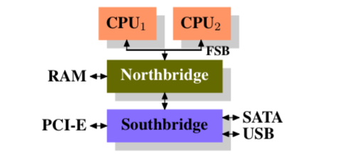北桥连接着内存， CPU 通过FSB(Front side bus)，和RAM通讯， 南桥连接着硬盘和USB等其他其他设备， 南桥通过北桥和 CPU 交互。
可以看到这里有些明显的缺陷， CPU得通过北桥和下面的设备打交道， 数据会二次传递， 后来就出现了DMA(Direct Memory Access), 设备直接和北桥打交到，而不需要和CPU交互， 但是这北桥的负担就更重了。
北桥和RAM之间的通道，同样也有瓶颈， 以前都是只有一条线连着， 现在多条也就是DDR2。
即使内存现在有诸多的优化， 但是还是远远不能赶上CPU的进化，CPU更多时候需要的等着内存的操作。特别在超线程、多核系统中并发访问，这里瓶颈尤为突出。
为了增加内存的带宽，有更多的方案被提出来：
北桥没有内存管理器， 而有独立的内存管理器，接到各自的RAM, 这样大大增加了内存带宽， 还有一种做法直接放置CPU中：
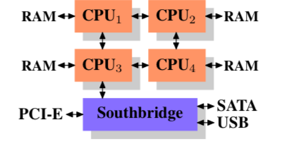这样有多少核，就带多少内存， 不好的地方在于， 如果CPU1 要访问CPU2内数据需要一次跳转, 而如果是CPU4就需要2次跳转。
CPU和主存的速度不匹配， 导致了引入更多的CPU缓存， 如一级、二级甚至三级缓存，来匹配这里的差异， 基于temporal and spatial locality理论， 也就是时间和空间上的局部性（这个也是缓存的精华）， 访问最近访问的数据， 和访问相邻数据的概率比较大， 比如循环中，这样缓存可以带来很大的性能提升！
缓存用来提速度–当然在命中率高的情况下， 比如CPU主存访问需要200个周期， CPU缓存只需要15周期，如果一段代码需要对100个数据操作100次， 主存中需要 100x100x200=2000000； 而如果用CPU缓存 168500，可以提升91.5%。
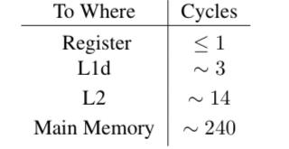CPU缓存使用SRAM（DRAM差别，刷电否），一般比主存小很多， 大概1/1000， 比如4M / 4G， 抽象看CPU 缓存结构如下：
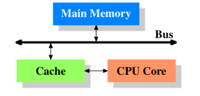这个就是个最简单的结构， CPU不再直接连接内存，而是和缓存连接：
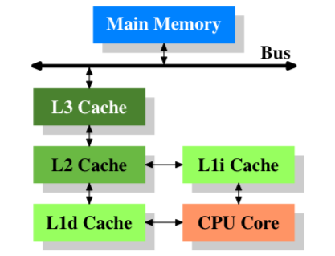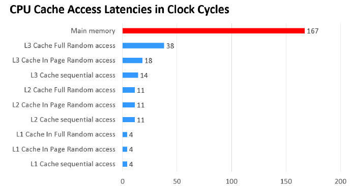
有人可能问为什么不弄更多的缓存，这里有性能、复杂性和经济上的考量和取舍参考
给老婆普及计算机知识 形象比喻：
- CPU就像是已经在宝宝嘴里的奶一样，直接可以咽下去了。需要1秒钟
- L1缓存就像是已冲好的放在奶瓶里的奶一样，只要把孩子抱起来才能喂到嘴里。需要5秒钟。
- L2缓存就像是家里的奶粉一样，还需要先热水冲奶，然后把孩子抱起来喂进去。需要2分钟。
- 内存RAM就像是各个超市里的奶粉一样，这些超市在城市的各个角落，有的远，有的近，你先要寻址，然后还要去商店上门才能得到。需要1-2小时。
- 硬盘DISK就像是仓库，可能在很远的郊区甚至工厂仓库。需要大卡车走高速公路才能运到城市里。需要2-10天。
所以，在这样的情况下——
- 我们不可能在家里不存放奶粉。试想如果得到孩子饿了，再去超市买，这不更慢吗？
- 我们不可以把所有的奶粉都冲好放在奶瓶里，因为奶瓶不够。也不可能把超市里的奶粉都放到家里，因为房价太贵，这么大的房子不可能买得起。
- 我们不可能把所有的仓库里的东西都放在超市里，因为这样干成本太大。而如果超市的货架上正好卖完了，就需要从库房甚至厂商工厂里调，这在计算里叫换页，相当的慢
当然这里的缓存对于应用这里的程序员是透明的，当今的CPU架构更加复杂，可能有多CPU, 多核，多线程：
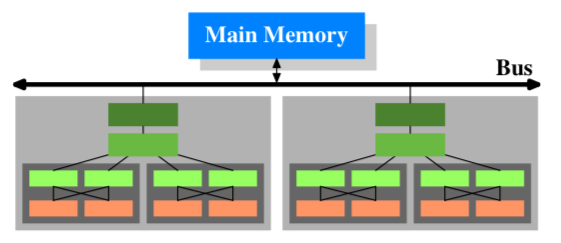上图我们有连个处理器，每个处理器有4核，每个有两个线程， 深灰色框子的是一个核，他们有自己的一级缓存，共享处理器内的缓存（灰色框子）；处理器之间不共享缓存（这个很重要）， 他们共同连接到外面的主存上。
缓存要比主存小很多，所以从主存加载（映射）数据进来，涉及到加载多少，和缓存的清理替换,上面说到 temporal and spatial locality， 所以在加载上面会有不同的策略加以优化。
有三种方式将缓存槽（chunk, cache line）映射到主存块中 1. 直接映射(Direct mapped cache) 每个内存块只能映射到一个特定的缓存槽。一个简单的方案是通过块索引chunk_index映射到对应的槽位(chunk_index % cache_slots)。被映射到同一内存槽上的两个内存块是不能同时换入缓存的。（译者注：chunk_index可以通过物理地址/缓存行字节计算得到） 2. N路组关联(N-way set associative cache) 每个内存块能够被映射到N路特定缓存槽中的任意一路。比如一个16路缓存，每个内存块能够被映射到16路不同的缓存槽。一般地，具有一定相同低bit位地址的内存块将共享16路缓存槽。（译者注：相同低位地址表明相距一定单元大小的连续内存） 3. 完全关联(Fully associative cache) 每个内存块能够被映射到任意一个缓存槽。操作效果上相当于一个散列表。
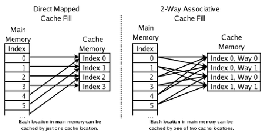不管何种方式映射这些内存， 最终替换清除工作都涉及到内存的一致性， 如何判断脏数据， 比较有名的有MESI 协议,单核Cache中每个Cache line有2个标志：dirty和valid标志，它们很好的描述了Cache和Memory(内存)之间的数据关系(数据是否有效，数据是否被修改)，而在多核处理器中，多个核会共享一些数据，MESI协议就包含了描述共享的状态。 在MESI协议中，每个Cache line有4个状态，可用2个bit表示，它们分别是 参考 ：
| 状态 | 描述 |
|---|---|
| M(Modified) | 这行数据有效，数据被修改了，和内存中的数据不一致，数据只存在于本Cache中。 |
| E(Exclusive) | 这行数据有效，数据和内存中的数据一致，数据只存在于本Cache中。 |
| S(Shared) | 这行数据有效，数据和内存中的数据一致，数据存在于很多Cache中。 |
| (Invalid) | 这行数据无效。 |
在MESI协议中，每个Cache的Cache控制器不仅知道自己的读写操作，而且也监听(snoop)其它Cache的读写操作。每个Cache line所处的状态根据本核和其它核的读写操作在4个状态间进行迁移。
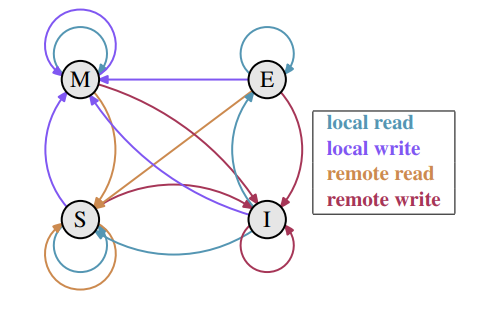这里诸多的思想可以为应用程序开发所参考， 这里仅仅是CPU 缓存涉及技术的冰山一角， 上文摘取部分对于程序开发比较重要， 特别对cache line 导致false sharing (伪共享）等问题。
>当一个处理器改变了属于它自己缓存中的一个值，其它处理器就再也无法使用它自己原来的值，因为其对应的内存位置将被刷新(invalidate)到所有缓存。而且由于缓存操作是以缓存行而不是字节为粒度，所有缓存中整个缓存行将被刷新！
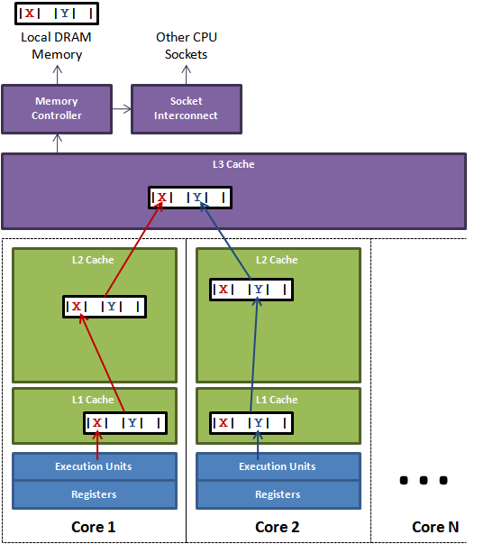上图说明了伪共享的问题。在核心1上运行的线程想更新变量X，同时核心2上的线程想要更新变量Y。不幸的是，这两个变量在同一个缓存行中。每个线程都要去竞争缓存行的所有权来更新变量。如果核心1获得了所有权，缓存子系统将会使核心2中对应的缓存行失效。当核心2获得了所有权然后执行更新操作，核心1就要使自己对应的缓存行失效。这会来来回回的经过L3缓存，大大影响了性能。如果互相竞争的核心位于不同的插槽，就要额外横跨插槽连接，问题可能更加严重,有人将伪共享描述成无声的性能杀手，因为从代码中很难看清楚是否会出现伪共享。
基于上面的问题， JAVA 世界里面有添加缓冲行，来避免伪共享， 人为把变量扩充到64个字节。 比如在JAVA 中可以这样做：
class LhsPadding
{
protected long p1, p2, p3, p4, p5, p6, p7;
}
可能有人说加个锁可以避免错误的数据分享， 但是这将增加数据的移动量， 下面Disruptor 将讲解一种无锁化高效内存队列
Java memory model¶
既然我们使用的是JAVA， 所以无法避免讨论JAVA 的内存模型。 套用上面CPU 内存模型中的理论到JVM， 还是有同样的问题：一个线程对共享变量的写入何时对另一个线程可见。那么JMM 抽象了线程和主内存之间的关系： 线程之间的共享变量存储在主内存（main memory）中，每个线程都有一个私有的本地内存（local memory），本地内存中存储了该线程以读/写共享变量的副本。本地内存是JMM的一个抽象概念，并不真实存在。它涵盖了缓存，写缓冲区，寄存器以及其他的硬件和编译器优化。
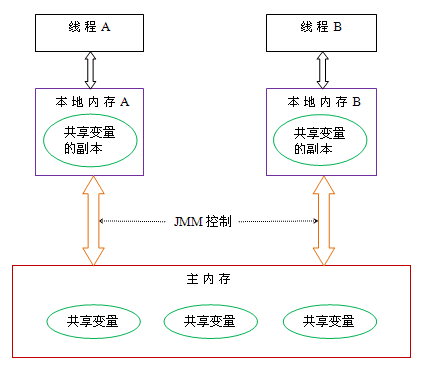如果线程A 和 B 需要 通讯修改某个变量他们需要：
- 首先，线程A把本地内存A中更新过的共享变量刷新到主内存中去。
- 然后，线程B到主内存中去读取线程A之前已更新过的共享变量。
Java 内存中对象， 和系统之间的映射关系：
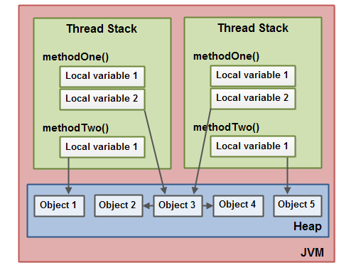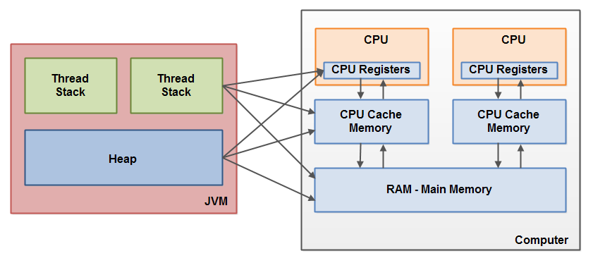
当对象和变量存储到计算机的各个内存区域时，必然会面临一些问题，其中最主要的两个问题是：
- 共享对象对各个线程的可见性
- 共享对象的竞争现象
支撑Java内存模型的基础原理
- 指令重排序
- 内存屏障
- happen before
具体可以参考 JMM specification . 这里主要讲下内存屏障（memory barrier）。
它是一个CPU指令。它是这样一条指令： 1. 确保一些特定操作执行的顺序； 2. 影响一些数据的可见性(可能是某些指令执行后的结果)。
编译器和CPU可以在保证输出结果一样的情况下对指令重排序，使性能得到优化。插入一个内存屏障，相当于告诉CPU和编译器先于这个命令的必须先执行，后于这个命令的必须后执行
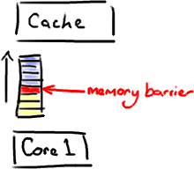内存屏障另一个作用是强制更新一次不同CPU的缓存。例如，一个写屏障会把这个屏障前写入的数据刷新到缓存，这样任何试图读取该数据的线程将得到最新值，而不用考虑到底是被哪个CPU核心或者哪颗CPU执行的.
Memory Barrier所做的另外一件事是强制刷出各种CPU cache，如一个Write-Barrier（写入屏障）将刷出所有在Barrier之前写入 cache 的数据，因此，任何CPU上的线程都能读取到这些数据的最新版本。
如果一个变量是volatile修饰的，JMM会在写入这个字段之后插进一个Write-Barrier指令，并在读这个字段之前插入一个Read-Barrier指令。这意味着，如果写入一个volatile变量，就可以保证：
- 一旦你完成写入，任何访问这个字段的线程将会得到最新的值。
- 在你写入前，会保证所有之前发生的事已经发生，并且任何更新过的数据值也是可见的，因为内存屏障会把之前的写入值都刷新到缓存。
volatile 在concurrent 包中被大量使用， 在下面的disruptor 中我们将继续讲解。
### Disruptor
关于Disruptor 的介绍网上比较多： 并发框架Disruptor译文 & 一起聊聊Disruptor .
Disruptor 是 LMAX一种新型零售金融交易平台， 后台架构的核心组件之一，能够在无锁的情况下实现网络的Queue并发操作， 官方描述： 一个线程里每秒处理6百万订单。
在设计Disruptor时要避免写竞争，让数据更久的留在cache里， 避免JMV 过度GC。
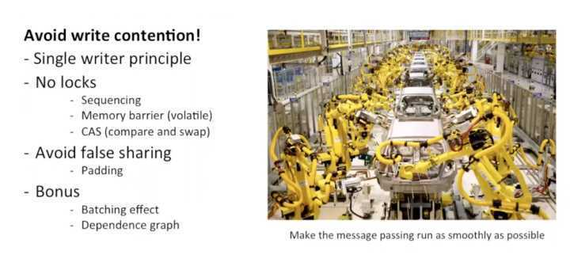核心数据对象， RINGBUFFER
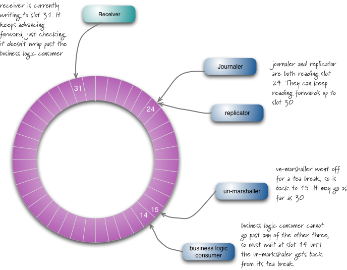Disruptor的核心是一个circular array，有个cursor，里面有sequence number，数据类型是long。如果不考虑consumer，只有一个producer在写，就是不停的往entry里写东西，然后增加cursor上的sequence number。为了避免cursor里的sequence number和其他variable造作false sharing，disruptor定义了7个long型，并没有给它们赋值，然后再定义cursor。这样cursor就不会和其他variable同时出现在一个cache line里，**内存填充**技术。
这个Ring buffer 是循环使用，如果producer在写的过程中，超出了原来的长度，就不停地覆盖原来的数据，增加cursor里的sequence number。bucket里的entry都是pre-allocated，避免每次都new一个object。因为disruptor是用java写的，这样可以避免garbage collection。producer写的过程是two phase commit。
Consumer每次在访问时需要先检查sequence number是否available，如果不available，会有多种策略。latency最高的一种是盲等。producer在写的时候，需要检查最低的sequence number在哪儿。这里不需要lock的原因是sequence number是递增的。producer不需要赶在最低sequence number前面，因而没有write contention。此外，disruptor使用memory barrier通知数据的更新。
Disruptor 使用： 1. 内存填充放在伪共享 2. 预分配内存减少GC 3. CAS 4. 内存屏障，无锁保证数据可见性
Disruptor 也在我们使用的框架， Axonframework 和 我们熟悉的log4j2 中大量使用， 后面在具体的业务中再细看。
Martin fowler¶
在软件架构界 Martin fowler 是个比较有名的角，他的这篇文章 The LMAX Architecture 对于Disrutpor CQRS, Event source 有很多的解读， 我们设计的交易系统架构也部分参考了此理论， 这篇文章Martin fowler 根据LMAX 中对disruptor 的使用， 以及衍生到我们普遍的架构上面的问题进行了叙述， 这里仅做摘要， 具体细节大家翻阅原文。
LMAX 是一个新零售金融公司（估计针对散户），这样在峰值交易量会比较大， LMAX母公司是betfair 也就是个赌*球的公司，赌*球在有大事件的时候同样交易量非常大， 那么在传统的解决方案， 很多事围绕一个强劲的DB来做， 维持高并发下的事务。 于是促成了LMAX尝试 actor model 以及他类似的SEDA ,我们比较熟悉的AKKA 的actor model 就是一个常见的应用。 Actor模型=数据+行为+消息。Actor模型内部的状态由自己的行为维护，外部线程不能直接调用对象的行为，必须通过消息才能激发行为，这样就保证Actor内部数据只有被自己修改,很多人喜欢使用这样的模型，这样避免在同步原语上的纠结。
同样LMAX团队也试图使用此模型， 但是他们发现了主要的瓶颈发生在消息通道，也就是队列Queue上面, 对性能追求极致的时候， 参考Martin Thompson 提出的 “mechanical sympathy”：如赛车手一样能个和自己赛车融为一体，感知机械细微之处，LAMX主要针对这个方向进行重现设计和架构。
由于如上文CPU 和内存之间的工作模式， 导致缓存、主存中间的竞争， Actor model 天然集成数据的操作， 可以很好解决缓存问题， 但是一个Acotor 还是需要和其他Actor 交流，也就Queue. 有Queue,就有写入和读出操作，就有对队列的资源竞争， 最简单的解决方案就是加个锁， 这将导致更多上下文的切换，LMAX 团队创建了新数据结构 Disruptor: 单核写入，多个读，以实现无锁化操作，单线程写入瓶颈就在于：单线程的性能在当今的架构下能达到多大？ 于是Disruptor 做了大量的测试： “The 6 million（600万） TPS benchmark was measured on a 3Ghz dual-socket quad-core Nehalem based Dell server with 32GB RAM.”
LMAX 最基本的架构
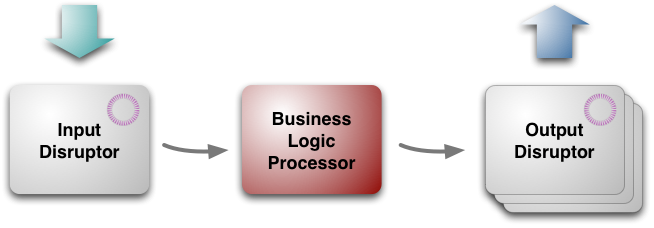- 业务处理逻辑（核心业务）
- 输入disruptor
- 输出disruptor
业务处理逻辑，为单线程不需要依赖任何框架，核心可以在任何JVM 上面运行。 真正的业务处理逻辑，可能么有那么简单， 需要从网络上收到消息，然后反序列化，冗余备份等等操作， 输出消息同样序列化传播出去， 这些任务都由输入、输出disruptor来处理。由于他们涉及到大部分是独立的IO 操作， 所以可以多线程并行处理，这个架构虽然为LMAX定制， 但是可以为其他架构借鉴。
业务处理逻辑
业务处理逻辑单线程的接收消息（输入），处理业务逻辑，然后把处理结果以 Event 方式发送给输出Disruptor, 所有的这些过程都是在内存中处理， 没有落地处理， 这里有几个好处， 首先都在内存会非常快， 其二由于是单线程序列化顺序（sequentially）处理，不需要事务管理。这使整个架构非常简单明了， 减低了编程的难度，也就减少了潜在的错误概率。
如果崩溃了如何处理？ 即使系统再健壮，也避免不了比如停电等等不可控制因素，采用了Event Source 参考前几篇， 当前业务驱动都是由输入Event 触发， 然后生成输出Event, 只要输入Event 已经落地， 就没有这个问题了， 你都可以replay事件流恢复到当前状态（这里需要保持幂等操作！）。
在具体Event Source 的操作上面，有很多的方案，基本的逻辑也都比较直观易懂（我们采用Axon框架）， 为了加快状态的恢复， 可以定期的做Snapshot， 这样恢复就非常迅速不需要从第一个事件开始， LAMX 每天晚上做一个Snapshot, 这样重启服务，加载Snapshot, 重发后续事件都能很快完成。
Snapshot 还不足够维持7X24，特别在比如你半夜东西坏掉， LMAX采用两个业务模块并行处理， 每个事件都由会两个业务模块处理，一个业务模块的处理结果会被抛弃， 如果一个废掉，另外一个直接切换过去， 据说可以做到毫秒级别,目前我们的做法是减少Snapshot 周期， 比如1024个版本一个，集群做parittion,坏掉在另外一台机上恢复。
Eventsource, 好处不仅记录所有的状态转变（Event），同时多个下游可以针对不同的业务场景消费这些Event， 比如监控、分析、聚合、风控等等， 互不干扰。
性能优化
如上面描述， 这里的核心点是， 业务逻辑在内存中， 单线程，序列化处理， 可以很容易让程序突破10K TPS限制， 如果刻意优化想可以达到100K, 只要你的代码够精简, 更和合理的内存分配和CPU使用策略。
LMAX 对数据结构的使用进行了优化，这样对内存和GC 更友好，比如用原生的long 值作为hashmap 的key， LongToObjectHashMap(fastutils 有更多)， 一个好的数据格式，对性能优化至关重要， 但是很多程序员都使用更方便的数据结构， 信手拈来什么方便用上面， 最好掂量平衡下,小优化可能带来大性能提升。
编程模型
基于上面我们所说的处理方式， 将对你的业务逻辑层带来不少限制， 你需要剔除对远程服务的调用， 一个远程服务的调用，将拉慢你的处理效率， 单线程处理业务逻辑可能会被挂起，这样整个处理的速度会降下来，所以你不能在业务逻辑层调用其他服务，取而代之，你发送事件到output event， 等待一个回调的input event。
打个简单的例子， 比如你用信用卡买罐豆子，一般的流程是，零售系统会检查的订单信息， 然后给信用卡检查服务发送请求，检查你的信用卡号，然后再确认你的订单，所有的一步完成，如果远程反馈缓慢你的订单的线程将被阻塞住，所以你启动多个线程来满足更多用户的请求。
但是在LMAX 的架构中，你需要将这个操作分层两组，第一个来获取用户的订单信息， 完成后，发送一个事件出来（信用卡检查请求），发送给信用卡公司。而业务逻辑层不会阻塞，继续处理其他用户的请求， 直到收到一个信用卡验证完的事件回到input 事件流中，然后继续下面的确认事宜。
以事件驱动模型，异步处理方式，是挺普遍的一种方式来增加吞吐量，同时让你的业务逻辑层， 更有弹性扩展性，只需要处理自己部分东西， 不需要关注外围的系统。
当然这种方式要有很好的应错能力， 不能做到强事务，需要比如事务补偿机制， 达到最终一致性（笔者加的）， LMAX 在事件输入输出端都用了Disruptor， 所以一旦错误发生，在内存中保持状态一致性很重要，但是这里没有一个自动回滚措施， 所以 LMAX 团队十分注意输入事件的验证措施， 来保证任何对内存数据状态的更新保证一致性，同时在上线前做大量的测试， 在我们系统，更多的解决方案是做transaction 补偿措施。
输入输出Disruptor
业务逻辑层是单线程， 但是在数据进入业务逻辑层前需要做很多工作， 比如消息反序列化， Eventsource将消息落地， 最终需要一个集群化的业务逻辑层来支撑这个架构，这样我们可以集群中replicate 这些输入消息， 同样对输出端也是。
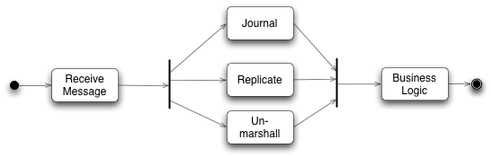这里的journal, replicate,unmarshall， 都涉及到IO 操作，都比较耗时，他们不像业务逻辑层， 需要严格单线程处理：比如交易系统，每个单子先来后到都影响后续成交的价格等。 这些操作可以并行， 于是用到了Disruptor, 也就是下图：
Disruptor 是一个生产者们用来放置对象以供多个消费者并行消费的queue,如果你仔细看的话他就是一个 Ring Buffer（环状缓冲）， 每个生产者和消费者都有一个序列号， 表示他们当前正在处理的槽，每个人只能修改自己的序列号， 但是可以读所有其它人的序列号， 这样的生产者可以查看消费者的计数来保证，他要写入的槽没有被人占用。同样一个消费者也可以监控其它消费者的计数， 来处理只有经过其它人处理过的槽。
输出端的 disruptors 也非常类似，他们用来处理序列化，和向网络上发送的任务。外输的消息可以分不同的topic, 每个topic 用一个disruptor 来分开发送，增加并发量。
Disruptor 可以支持一个生产者和多个消费者，也支持多个生产者多个消费者模式。
Disruptor有个好处是如果消费者跟不上速度，比如一个反序列化比较慢，可以批量的处理数据。 比如现在反序列化到15槽， 处理完已经到31槽来， 他可以批量的读取16～30数据，这样处理方式可以让比较慢的消费者可以跟上来，以减少延迟。
增加更多的消费者， 也可以增加并发量， 比如落地消费者比较慢， 可以增加两个， 一个专门消费下标是偶数的槽， 另外一个处理下标是奇数的槽，这样就可以大大增加并发量。 这个也是Axon里面使用到的一个方法，多消费者分不同segement， 根据aggregate identifier 的hash值取模，消费者来处理，这样既保证来每个aggregate处理在同一个线程， 也增加来并发量， 这也是为什么disruptor可以带来4倍的性能提升。
Ringbuffer 的大小需要是2的次方， 这样好处可以快速的取模， 在LMAX和其它的系统一样Disruptor也要被每晚重启， 重启的主要目的是清理内存，这样大大减少在交易时间由于gc导致昂贵的垃圾回收开销－－定时重启是个很好的方法， 不仅仅是这里避免垃圾回收，其实也是对你系统的一个锻炼，应急反应。
Journaler 的工作主要是把所有的事情落地化， 在出错的时候可以replay恢复状态，LMAX没有用数据库落地， 而是简简单单的文件系统，在大家看来这个可能不可思议， 但是顺序写入文件系统的性能可能不逊于内存， 这点可以参考kafka的解读。
先前我们讨论来LMAX，用多台机器集群以更快的进行failover, replicator 的用途就是保证这些机器之间的同步， 所有LMAX集群交流使用来IP广播，这样每个客户端不需要知道那个节点是master, 这个由master几点自己控制选择监听，然后在replicator, replicator把收到的事件广播给其它的slave节点， 如果master节点死掉来，比如没有来心跳， 另外一个节点将编程master节点， 开始消费输入事件， 启动他自己的replicator, 每个节点都由这里全套的组件，序列化，落地，反序列化。（这里如何选择master, 脑裂如何解决？ ）
反序列化把网络收到的数据，转化成java 对象，一共业务逻辑层使用，这个消费者和其它消费者不一样， 他需要修改ring buffer 里的东西， 这里需要遵循的规则是，消费者可以往ring buffer 中写东西， 同时只能由一个消费者写入，
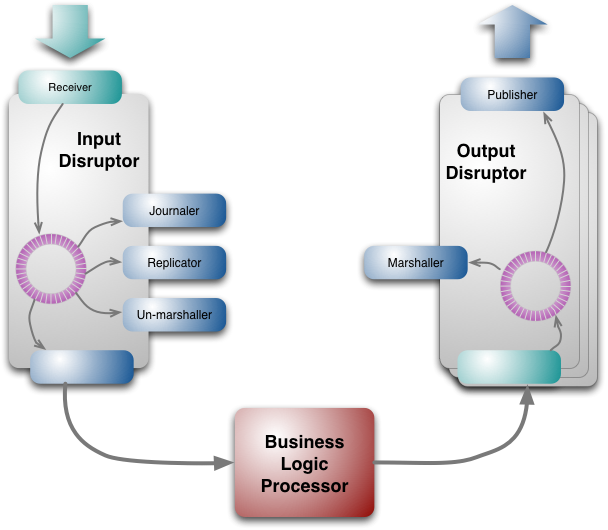其它¶
并行和并发 并行并发是两种不同概念， 这里 Concurrency vs Parallelism - What is the difference? 有讨论，不再细述，里面go 小人画不错，解释也比较形象到位。
纤程和其他